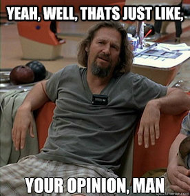

OpenAPI: More Than Documentation
Hello!
- My name is Matt
- It's nice to see you
- Thank you for coming

There Will Be Slides
Go Ahead, Hashtag It
- Feel free to live-tweet/toot!
- Hashtag:
#tek2023 - Feel free to @ me
On a Unrelated Note

Setting Expectations
- Goal: learn about OpenAPI and related possibilities
- Part (opinionated) prescriptive, part speculative

OpenAPI
"OpenAPI... previously known as... Swagger... is a specification for a machine-readable interface definition language for describing, producing, consuming and visualizing web services." Wikipedia
History of OpenAPI
- 2010 - Wordnik begins development of Swagger
- 2015 - SmartBear Software acquires Swagger and creates the OpenAPI Initiative
- 2016 - Swagger is renamed to the OpenAPI Specification (OAS) and moved to GitHub
- 2017 - OpenAPI Initiative releases OpenAPI 3.0.0
- 2021 - OpenAPI Initiative releases OpenAPI 3.1.0 with JSON Schema vocabularies alignment and new elements for describing webhooks
OpenAPI Specifications
- Specifications are formatted as YAML or JSON.
- They include information on:
- server environments
- security schemes
- endpoints
- supported endpoint operations
- endpoint request parameters and payloads
- endpoint responses codes and payloads
Writing a Specification
- Specs can get large quickly and become unwieldy in a text editor or IDE.
- For nontrivial changes, use an OpenAPI spec editor.
Writing a Specification
{kind=link}
Writing a Specification

(Avoiding) Writing a Specification
Creating OpenAPI from HTTP Traffic
Akita is an observability tool, which can sniff HTTP traffic, and build models of your data.
Stores traffic data in HAR files, which it can then convert to an OpenAPI spec.
Validating a Specification
- Use validators in text editors/IDEs, version control repository hooks, CI/CD builds, etc.
- Keep validator configuration in version control.
Validating a Specification
npm install @stoplight/spectral-cli
echo 'extends: ["spectral:oas"]' > .spectral.yaml
spectral lint spec.json
Validating a Specification
composer require cebe/php-openapi
vendor/bin/php-openapi validate spec.json
Versioning a Specification
Treat the spec as a shippable asset, meaning...
- Keep the spec in its own version control repository (e.g. git).
- Use pull requests to review spec changes.
- Update the
info.versionspec attribute as the version changes. - Maintain a version control tag for each version.
- Use semantic versioning.
Versioning a Specification
info.version attributeAPI Documentation
{kind=link}
API Documentation
{kind=link}
API Documentation
{kind=link}
API Documentation
- Postman has a library to convert from OpenAPI to a Postman collection.
- Keep Postman-specific elements (e.g. automated tests) in separate files and integrate them into the generated Postman collection at build time.
- This build stage can also be used to work around bugs like this one where possible.
Prototypes
PostgREST is a standalone web server that turns your PostgreSQL database directly into a RESTful API. The structural constraints and permissions in the database determine the API endpoints and operations. "A poor man's API"
by Nicolas Fränkel
Prototypes
PostgREST automatically serves a full OpenAPI description on the root path. This provides a list of all endpoints (tables, foreign tables, views, functions), along with supported HTTP verbs and example payloads. PostgREST documentation
Mock Servers
Integrate frontends with an API before it's built.
- Prism - open source standalone HTTP mock server
ybelenko/openapi-data-mocker-server-middleware- open source PSR-15 middleware to generate data from OpenAPI spec- How to Mock an API in One Minute using ApiDog (commercial)
Request/Response Validation
league/openapi-psr7-validator- validator for OpenAPI 3.0 implemented as PSR-15 middlewareopis/json-schema- validator for OpenAPI 3.1 implemented as a libraryhkarlstrom/openapi-validation-middleware- PSR-15 middleware that usesopis/json-schema
Automated Test Generation
"Schemathesis is a specification-centric API testing tool for OpenAPI... applications. It reads the application schema and generates test cases... The application under test could be written in any language; the only thing you need is a valid API schema..."Schemathesis
Automated Test Generation
st run https://example.schemathesis.io/openapi.json
Supports Docker if you prefer to avoid
Python environments
Automated Test Generation
"Portman leverages your static OpenAPI specs, with all its defined API request/response properties, to power your Postman collection and test suite."Portman CLI 1.0 - Better API testing
Automated Test Generation
npm add --save-dev @apideck/portman@latest
portman \
-u https://specs.apideck.com/crm.yml \
-c portman-config.crm.json \
-o crm.postman.json
Test Data Generation
use Vural\OpenAPIFaker\OpenAPIFaker;
$faker = OpenAPIFaker::createFromJson($yourSchemaAsJson);
// or
$faker = OpenAPIFaker::createFromYaml($yourSchemaAsYaml);
$fakeData = $faker->mockResponse('/todos', 'GET');
Uses fakerphp/faker to generate fake data for OpenAPI requests / responses.
Automated Contract Testing
Checks for API implementation drift from spec in Laravel test suites.
composer require hotmeteor/spectator --dev
php artisan vendor:publish \
--provider="Spectator\SpectatorServiceProvider"
Automated Contract Testing
class ExampleTest extends TestCase {
public function testBasicExample() {
\Spectator\Spectator::using('Api.v1.json');
$response = $this->postJson('/user', ['name' => 'Sally']);
$response
->assertValidRequest()
->assertValidResponse(201);
}
}
Infrastructure Configuration
- Routing configuration, e.g. using an API Gateway like AWS API Gateway, Kong, etc.
- Monitoring for un/expected endpoint responses, e.g. in AWS CloudWatch
Client Libraries
composer require --dev jane-php/open-api-3
composer require jane-php/open-api-runtime
php vendor/bin/jane-openapi generate
$apiClient = Vendor\Library\Generated\Client::create();
$foos = $apiClient->listFoo();
Change Detection
Optic (commercial)
- Automatic breaking change detection and consistent naming conventions standards
- API statistics such as changes over time and breaking changes introduced
CI/CD Pipelines
- Validate the specification
- Run automated generated tests and/or contract tests
- Deploy new spec version, API documentation, and change history
- Deploy changes to infrastructure configuration
- Regenerate and deploy client library packages
Other Resources
- openapi.tools
- Design First APIs with OpenAPI, a presentation by Matt Trask
That's All, Folks
- joind.in/talk/94051 - Please leave feedback!
- matthewturland.com
- me@matthewturland.com